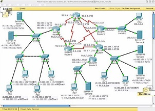
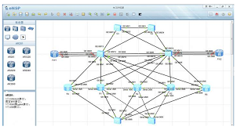
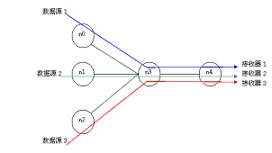
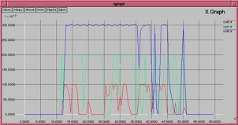
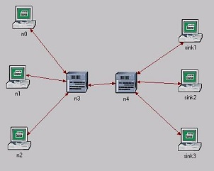
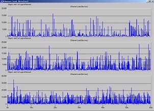

计算机网络仿真实验教学资源
计算机网络是计算机以及软件类专业一门主要的专业基础课程，该课程的学习必须通过实验进一步深入理解课堂教学内容，切实掌握计算机网络各层次和协议的工作原理。完整地建立起计算机网络的概念。通过各单元实验分析计算机网络层次和协议的实际使用方法，深入理解各种网络设备的工作原理和使用方法。
目前主流的网络仿真工具有很多，既有网络设备厂商提供的仿真工具，如Cisco公司的Packet tracer，如图38所示，华为的网络仿真工具eNSP，如图39所示，也有跨越网络平台的网络仿真工具，如Opnet、NS2、Matlab等。这些主流的网络仿真软件都采用了离散事件模拟技术，并提供了丰富的网络仿真模型库和高级语言编程接口，提高了仿真软件的灵活性和使用方便性。
 
图 38:Cisco网络仿真工具 图 39:华为网络仿真工具
在图40所示的仿真网络中，图中有5个节点，其中0、1、2号节点是发送节点，3号节点是转发节点，4号节点是接收节点。可以设置各个节点不同发送流量，分析流量对于网络性能的影响。
 
图 40:NS2仿真网络的拓扑结构 图 41:NS2仿真结果—负载曲线
用Opnet Moderler对图40所示的网络进行仿真。用三个以太网工作站来表示网络中的三个数据源节点n0、n1和n2，用两个交换机来表示网络流量中转节点n3和n4，用三个以太网工作站来表示网络中的三个数据接收器sink1、sink2和sink3，如图42所示。设置网络模拟运行时间为1小时（60分钟），取10000个取样点，可得每个接收端（sink1、sink2和sink3）的负载(load)统计曲线如图43所示。
 
图 42:使用Opnet仿真网络拓扑结构 图 43:Opnet Modeler仿真结果—负载曲线
基于以上分析，可以利用网络仿真工具完成如下虚拟实验: 实验1 登录交换机与网络操作系统基本使用 实验2 交换机的端口配置与生成树协议配置 实验3 VLAN及VLAN间路由配置 实验4 登录路由器与路由协议（静态及RIP）配置 实验5 广域网协议配置 实验6 防火墙配置与NAT配置 实验7 路由综合实验（含OSPF）与故障诊断 实验8 IPV6 地址配置 实验9IPV6 地址解析 实验10 家用无线路由器基本配置及升级 实验11 无线信道间干扰性能测试 实验12 在服务器上安装配置FTP服务和WEB服务 实验13 在服务器上安装配置DNS和DHCP服务 实验14 端口扫描实验 实验15 明文嗅探实验 实验16 ARP攻击分析 实验17网络流量分析 实验18网络负载均衡